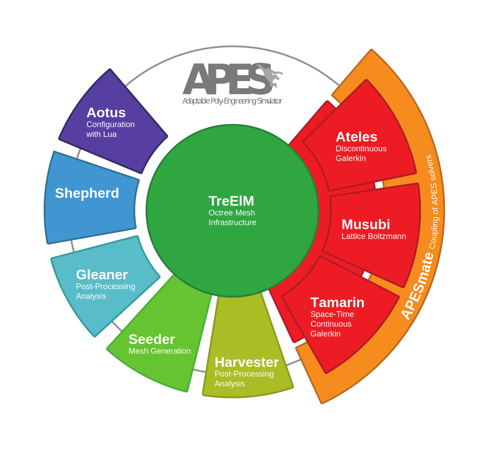

Kartik Jain, Assistant Professor of Biofluid Dynamics,
Department of Thermal and Fluid Engineering,
University of Twente,
The Netherlands
E-mail: k.jain@utwente.nl


The adaptable poly engineering simulator framework (APES)

The APES development started in the group of my MS and PhD advisor Prof.
Sabine Roller at RWTH Aachen and then moved to the University of Siegen.
The team is now located at the
Institute of Software Methods for Product Virtualization.
I have constantly contributed to parts of this framework since my master
studies in Aachen, especially the LBM solver Musubi.
Components of the framework have been tested for scalability on all the
major supercomputers (Tier-0) in Europe including the
SuperMUC-NG,
Hazel Hen,
Juqueen,
Piz Daint.
Most of the Co∅ projects use and developments components within this framework.
Various members of APES are available as open sources packages that can be
downloaded here.